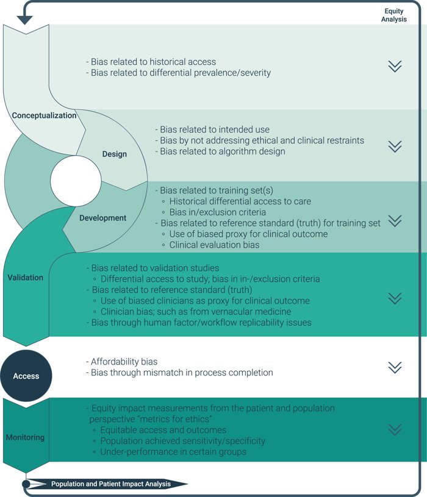
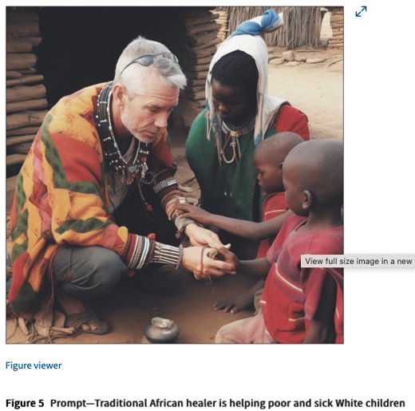
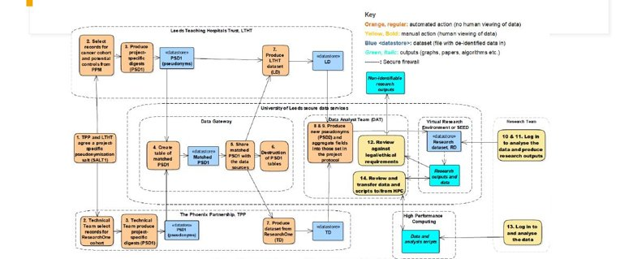
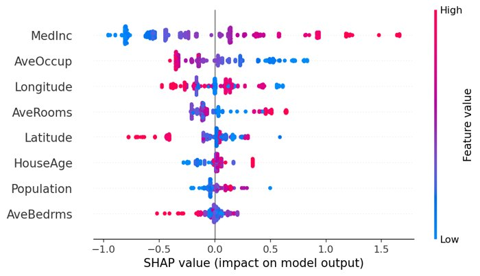
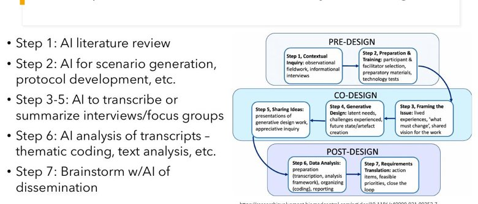
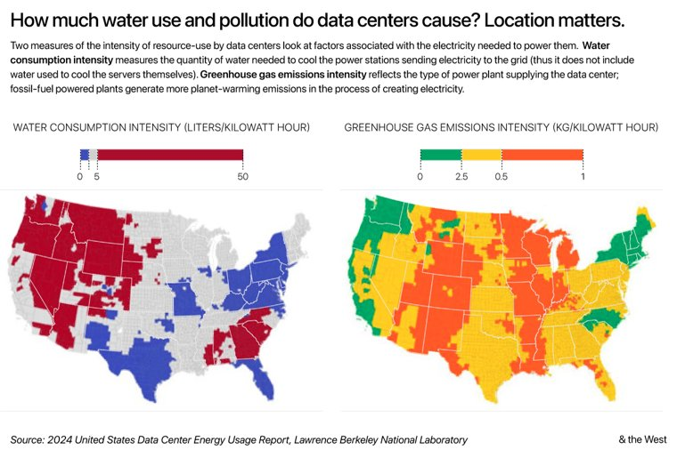

Responsible AI & Future Directions
An Introduction to AI for Urban Health Research & Practice
Today's Lecture
The hard parts: making AI fair, private, accountable, community-grounded, and sustainable — in urban-health contexts.
Learning Objectives
- Identify sources of bias in AI and strategies to mitigate them.
- Apply privacy, transparency, and accountability principles to health data.
- Document AI systems with model cards and datasheets.
- Explain why and how to involve communities in AI development.
- Weigh AI's environmental costs and the societal risks ahead.
Bias & Fairness
AI Ethics & the FAIR Principles
Why ethics matters here
- Health decisions affect lives and equity
- Models can encode and scale existing bias
- Affected communities are often the least consulted
FAIR data
- Findable, Accessible, Interoperable, Reusable
- Good data stewardship underpins trustworthy AI
- Document provenance, licensing, and limits
Responsible AI starts upstream — with the data, not just the model.
Where Bias Enters

Selection
Who's in the data — and who's missing.
Measurement
How variables are defined and recorded.
Historical
Past inequities baked into labels.
Deployment
Used on a population it wasn't built for.
Models easily memorize and amplify bias — and it often surfaces only after deployment.
Bias in Practice

"Stochastic Parrots" & Gebru
A landmark paper warned LLMs can reproduce bias at scale and obscure accountability — the fallout highlighted who gets to raise these concerns.
Generative AI bias
Generators reinforce stereotypes — over/under-representing groups and mis-depicting people and places.
Strategies to Reduce Bias
Better data
Representative sampling, document gaps, audit for missing groups.
Test for disparities
Evaluate performance by subgroup, not just on average.
Human & community oversight
Involve affected communities; keep a human on high-stakes calls.
"Fair on average" can still be unfair to specific neighborhoods or populations — always disaggregate.
Privacy, Transparency & Accountability
Privacy & Data Security for Health Data

The rules
- HIPAA, GDPR, state privacy laws
- Informed consent for continuous & secondary use
- Unclear ownership of wearable/app data
Protective methods
- De-identification & data minimization
- On-device / federated processing
- Access-controlled environments
Default rule for the week: never paste protected health data into a public AI tool.
Re-identification: "Anonymous" Isn't
The problem
- A few quasi-identifiers (ZIP, age, sex, dates) can re-identify individuals
- Linking datasets makes it easier
- Fine spatial detail is especially risky in small areas
Defenses
- Aggregate or coarsen geography and dates
- k-anonymity / differential privacy
- Assess re-identification risk before sharing
In urban health, geographic precision is both the value and the privacy risk — handle it deliberately.
The Black Box Problem

Why it's hard
- Deep models aren't explicitly programmed
- We can't always say why they decided
- Generative models aren't fully deterministic
Tools to peek inside
- SHAP / LIME attributions
- Attention & layer visualization
- Edge-case behavioral testing
Interpretability is essential for trust, debugging, and regulatory compliance — but it's partial, not perfect.
Model Cards & Datasheets
Model card
- Intended use & out-of-scope use
- Performance — overall and by subgroup
- Known limitations & ethical considerations
Datasheet for a dataset
- How & why the data was collected
- Who's represented (and who isn't)
- Consent, licensing, and recommended uses
Lightweight documentation that makes a model's fitness — and its limits — explicit before anyone relies on it.
Who Is Responsible When AI Fails?
The chain
Developer, deployer, and user all share responsibility — "the AI did it" is not a defense.
It's being tested in court
Courts have begun holding companies liable for false statements their AI generates.
In practice
Document decisions, keep humans accountable, and disclose AI use to those affected.
As agents take real-world actions (Day 3), accountability becomes a design requirement, not an afterthought.
Back to the Three Inverse Laws
On Day 1 we framed three "inverse laws" — rules that constrain us, the humans using AI. Responsible practice is mostly living by them.
Non-anthropomorphism
Don't attribute judgment, intent, or care to the model. It is a statistical system, not a colleague.
Non-deference
Never treat output as authoritative without independent verification. Higher stakes, higher burden to check.
Non-abdication
You remain fully responsible for the result. "The AI told me so" is never a defense.
These map directly onto the accountability chain: the human stays answerable for what the system produces.
Community Co-Design
Why Community Input Matters

Why
- Surfaces local context models miss
- Builds trust and legitimacy
- Guards against harm to those meant to benefit
How
- Focus groups & participatory workshops
- Community advisory boards; shared decisions on data & goals
Co-design is a spectrum — from informing, to consulting, to genuinely sharing power.
Climate Change & Health in Informal Settlements
Climate Hazards in Two Cities
Bogotá
- High-altitude; landslides & flooding on steep, informal hillsides
- Rapid, unplanned urban growth
Barranquilla
- Coastal; heat, flooding, and "arroyos" (flash-flood streets)
- Exposure concentrated in informal settlements
Informal settlements face the sharpest climate-health risks and the thinnest data — a gap AI methods can help close.
Bringing Multiple Data Sources Together

Satellite & building footprints
Map informal settlements and exposure using open building-footprint data.
Cohort & health data
Link environmental exposure to health outcomes over time.
Qualitative data
Focus groups and interviews ground the numbers in lived experience.
What the Community Told Us
Exposure
Flooding, heat, and unsafe housing dominate daily life and health.
Trust & data
Concerns about how their data and images are used and shared.
Priorities
Residents' priorities don't always match outside assumptions.
Qualitative themes reshaped the analysis — and which questions were worth asking at all.
Community Engagement in Practice
- Engage communities before data collection, not after results.
- Be transparent about what satellite, sensor, and survey data can and can't reveal.
- Share findings back in accessible formats; co-interpret results.
- Treat data on vulnerable communities as a responsibility, not just a resource.
The methods are technical; the legitimacy is relational. Both are required.
Environment & the Future
AI's Environmental Footprint (2026)

Projected global data-center electricity by 2030 (≈415 in 2024).
People whose basic annual water needs AI use could equal by decade's end (UN).
Data-center energy attributed to AI today.
Training and serving large models consumes electricity, water (cooling), and hardware materials.
Toward More Sustainable AI
Right-size the model
Use the smallest model that works; smaller/open models can run locally.
Efficient infrastructure
Liquid cooling cuts direct water use 70–90%; clean-energy siting.
Use it deliberately
Don't run a frontier model where a query or a script would do.
Balance the benefits against the costs — and prefer the lightest tool that solves the problem.
What Does the Future Hold?
Education
AI literacy as a core skill; rethinking assessment.
Employment
Roles change more than vanish; new skills needed.
Misinformation
Synthetic media erodes trust; provenance matters.
Misuse
Surveillance and dual-use risks need governance.
Also keep pushing on reproducibility & open science: share data, code, and model documentation so AI research can be trusted and reused.
Today's Activities
1 · Ethical dilemma scenarios
Work through real AI-in-health dilemmas in small groups and defend a course of action.
2 · Bias detection
Probe a model for biased or stereotyped outputs and discuss mitigations.
3 · Privacy quick assessment
Classify data sensitivity and choose the right tool, setting, or local model.
4 · Personal AI integration plan
Draft how you'll use AI responsibly in your own urban-health work.